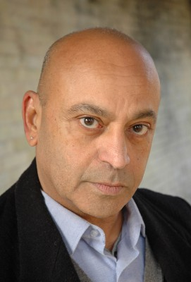

#7845 Kusswechsel - Kein Vorspiel ohne Nachspiel

 IMDB-Wertung: 5.4 / 10
IMDB-Wertung: 5.4 / 10  Metascore: 0
Metascore: 0 
Die sensible Anna ist gar nicht so betrübt, als ihr Gemahl nach einem Unfall das Gedächtnis verliert, bietet sich doch die Gelegenheit, den robusten Tankwart und leidenschaftlichen Fußballanhänger in einen zärtlichen Liebhaber zu verwandeln, der sie sanft massiert und den Putzwedel schwingt. Paolo und seine Gattin gehen schon lange getrennte Wege. Als seine sterbenskranke Mutter die letzten Tage im Kreis der Familie verbringen will, spielen sie der Alten Harmonie vor, inklusive schnell gedrehter Urlaubsvideos.
Jahr: 2011
Dauer: 101 Minuten
FSK:
Land: Italien Studio: Senator FilmTonspuren:
Untertitel:
Auflösung: 1080p (1920x816) Größe: 6512 MB
Genre: Komödie
Regisseur: Fausto Brizzi
Drehbuch: Fausto Brizzi
Soundtrack: Bruno Zambrini
Darsteller:
- Francesca Inaudi als Valeria
- Luca Biagini als Ringo
- Giuseppe Cederna als Renato
- Armando De Razza als Roberto
- Chiara Francini als Marta
- Rosabell Laurenti Sellers als Flavia
- Fabrizio Rizzolo als Dott. Morra
-  Hassani Shapi als Ahmed il Pakistano
- Nicolas Vaporidis als Andrea
- Marta Zoffoli als Lisa Brancale
- Ficarra als Rocco
- Picone als Michele
- Claudio Bisio als Marcello
- Nancy Brilli als Paola
- Emilio Solfrizzi als Piero
- Serena Autieri als Diana
- Luciana Littizzetto als Anna
- Lorenzo Cesari als Lorenzo
- Wilma De Angelis als Clara
- Gigio Alberti als Cardiologo / Rosticciere
- Roberto Angelelli als George
- Laura Calgani als Giada
- Luca Canale Brucculeri als Collega d'ufficio
- Edoardo Cesari als Lorenzo
- Paola Cortellesi als Chiara
- Fabio De Luigi als Walter
- Metis Di Meo als Tatiana
- Massimo Franceschi als Avvocato
- Tongquing Ke als In-Su-Li
- Marianna Lambiase als Ospite
- Maurizio Lops als Medico Clara
- Massimo Morini als Presidente Giuria Beatlesmania
- Lucia Ocone als Monica
- Francesca Piccinini als Herself
- Alessandro Preziosi als Diego
- Paolo Ruffini als Ivan
- Enzo Salvi als Buzzurro
- Carla Signoris als Nicoletta
- Davide Solenghi als Ospite
- Matteo Urzia als Alberto
- John Wing als Park-Li-Nang
- Giorgia Wurth als Eva
- Sarah Felberbaum als Francesca (uncredited)
Datei: X:\2-Dilogie(G-M)\Kusswechsel\Kusswechsel - Kein Vorspiel ohne Nachspiel (2011, FSK, 1920x816).mkv seit 25.12.2017
Festplatte: HD Collection-2(A-Z)-3(A-M)
 Alle Filme aus Gruppe '2-Dilogie(G-M)\Kusswechsel'
Alle Filme aus Gruppe '2-Dilogie(G-M)\Kusswechsel'